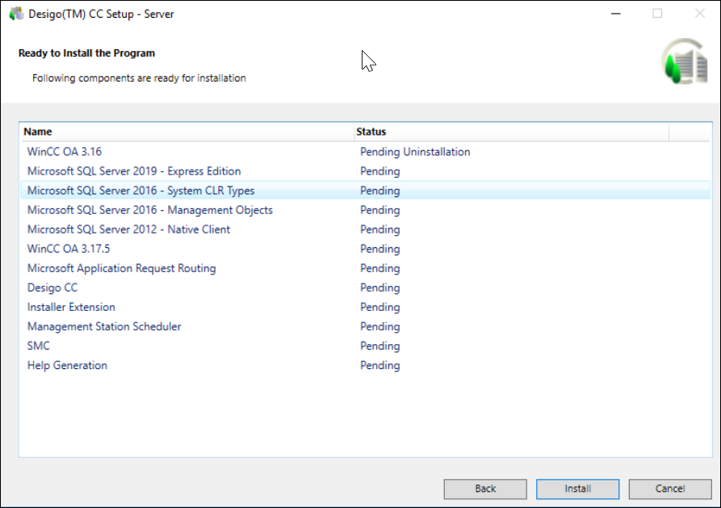

Verify and Install the Components
- The Ready to Install the Program dialog box that displays listing the status of the prerequisites, Desigo CC installation (platform + mandatory extensions), platform patch, non-mandatory extensions, mandatory extension patches, non-mandatory extension patches, help merging status, and the status of the post-installation steps selected for execution during the upgrade process.

- Click Install. This can take a few minutes as the Installer installs/upgrades the listed prerequisites and any extensions.
- A message box may display asking you to restart the computer. On confirmation, the computer is restarted and the Ready to Install the Program dialog box automatically displays and continues the installation. However, if the Installer does not automatically launch, you must manually run the file Gms.InstallerSetup.exe.
- After the IIS installation on the selected setup type, the Installer also installs Microsoft Application Request Routing (ARR) that displays in the Ready To Install the Program dialog box.
If you disable IIS configuration, ARR does not install. - You can cancel the upgrade process using Cancel. On confirmation, the cancellation process starts after maintaining a consistent state for the Installer. However, it does not rollback and inform you that the installation was interrupted and is incomplete.